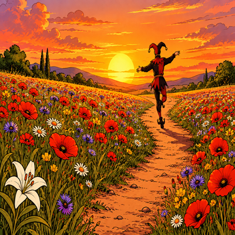

~~ VIII ~~
Se suceden las noches de colores irisados y frenéticos que me terminan confundiendo con su azul. Y podría soslayarlas si quisiera, pero enmudecería de inmediato. ¿Se pueden blandir las notas de mi acordeón en el arco iris? Dicen que solamente en julio. No tengo tiempo que perder, pues ya estamos en febrero y si me pierdo ya no podré pensar en otra cosa que en encontrarme. ¡Qué fastidioso resultará! Luego dirás que me confundo con frecuencia; pero no deja de ser por tu culpa: me hablas cuando no te escucho y te enfadas y te sabe mal. Hago todo lo que puedo y siempre un poquito más aunque no pueda. Pero si te ríes de mí hoy haré un poco menos, así te quedarán cosas por hacer cuando llegue la noche. ¿A que no te hará gracia entonces? Seguro estoy de que acabarías contoneándote al ritmo de tu canción. Esa que cantabas los domingos al salir a pasear. Me parecía entonces que hasta los perros ladraban un poco menos, pero podía ser también porque tenían hambre, ¿no? Una manzana llevo en el bolsillo de la chaqueta y, si quieres, te la doy. No me importará pasar hambre si meriendas de rojo, que yo visto hoy de azul y hacen juego mi sombrero y mis zapatos. Pero ya está oscureciendo y me tengo que ir, todavía me queda mucho camino y no sé a dónde voy. Si lo supiera te llevaría conmigo aunque hablases durante todo el camino. Ya sabes que no te guardo rencor por lo que hiciste el otro día. Me supo mal, pero lo olvidé al acostarme. Mañana saldremos más pronto a pasear.
Fin.